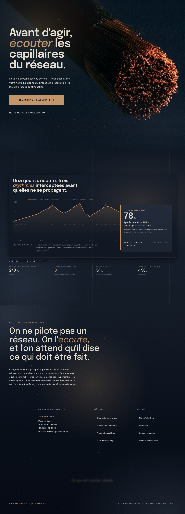
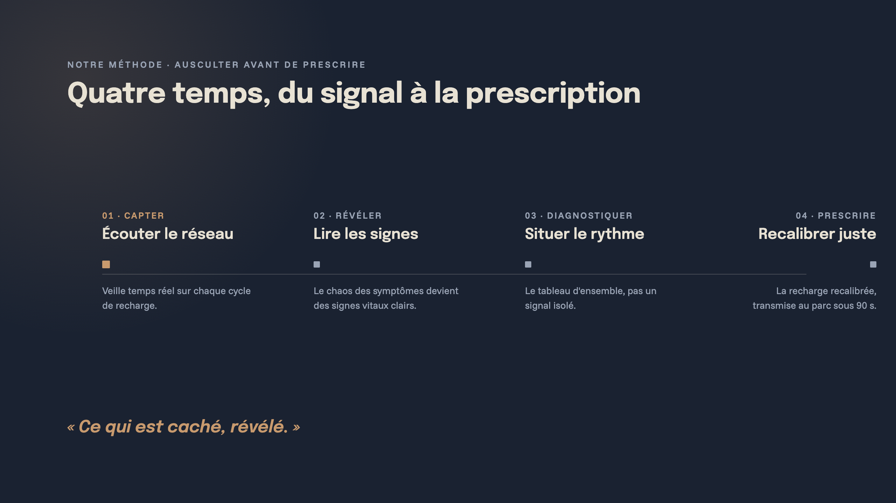
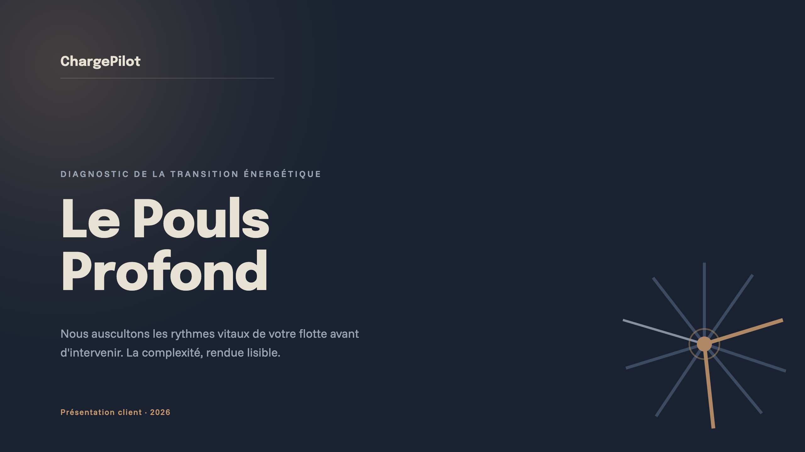
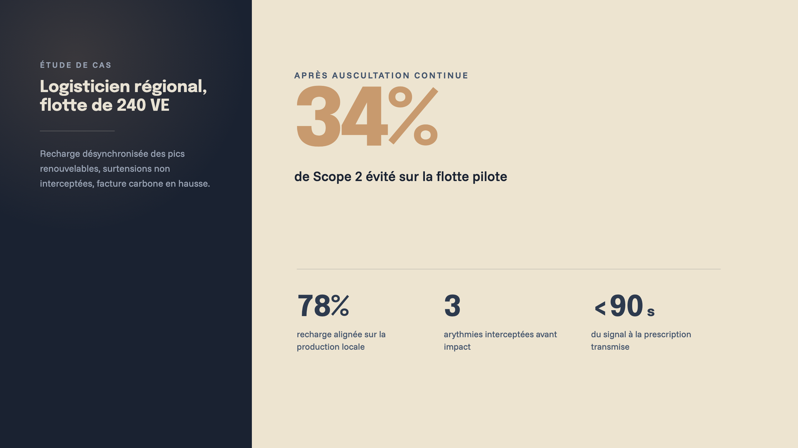
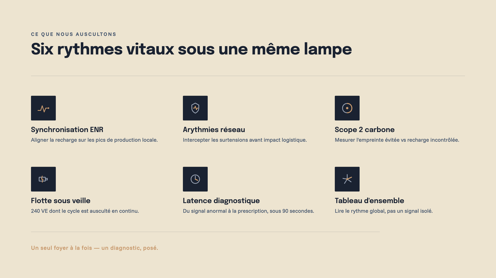
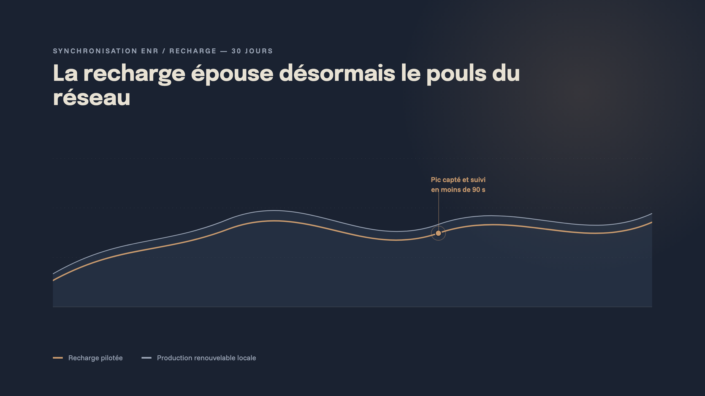
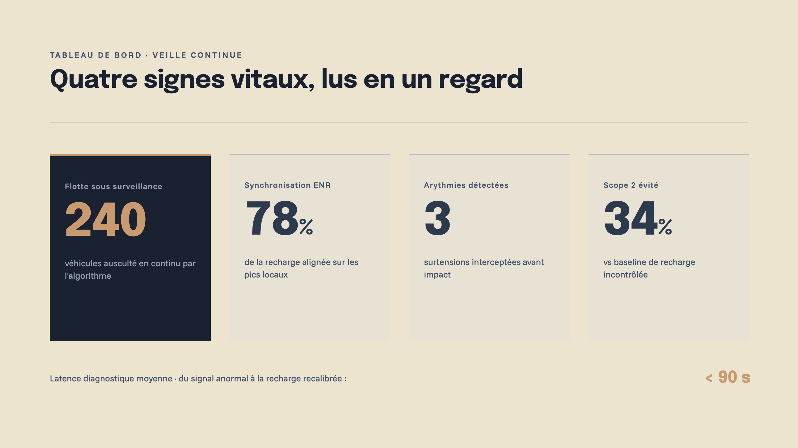
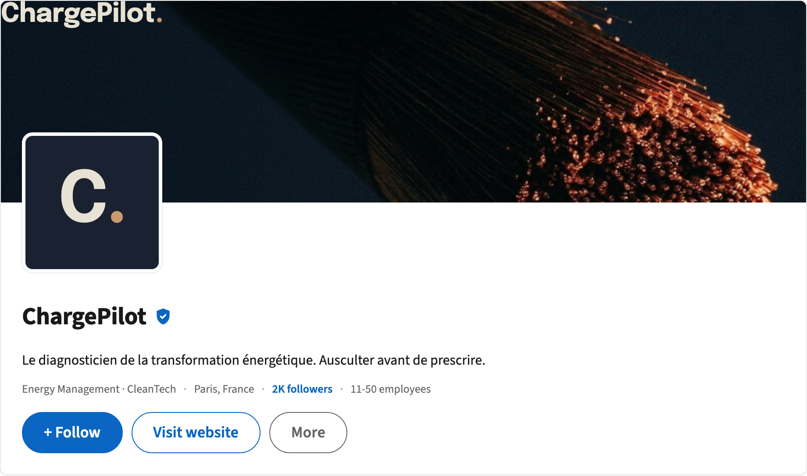
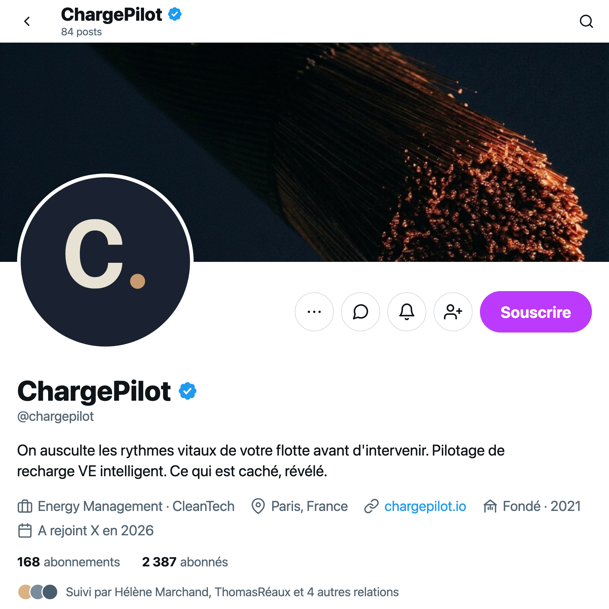

#1A2231
oklch(0.190 0.025 261)
Brand Book vv1 — 2026
Sommaire
01 — Identité condensée
Ausculter avant de prescrire.
Ce qui est caché, révélé.
Le diagnosticien de la transformation énergétique. Energy management, depuis 2021.
Aa
Epilogue · display
Aa
Funnel Sans · mono
02 — Big Idea
ausculter avant de prescrire.
Là où le secteur promet la maîtrise, ChargePilot propose l'écoute. Poser le stéthoscope là où personne ne prend le temps de l'appliquer, capter les rythmes vitaux d'une organisation avant d'intervenir.
L'image fondatrice est une coupe : le faisceau de cuivre sectionné qui révèle ses centaines de filaments. Transformer le chaos des symptômes en signes vitaux clairs — montrer que la complexité est ordonnée, lisible, gouvernable.
La haute technicité n'est pas exhibée. Elle est inférée par la qualité du diagnostic. C'est la compétence la plus haute qui se manifeste dans le geste le plus humain : écouter, et résister à l'impulsion du traitement prématuré.
03 — Concept
Le mode sombre n'est pas un effet : c'est la condition de l'écoute. Dans la pénombre du cabinet à la lampe d'archive, les signaux faibles deviennent visibles, les filaments éclairés ressortent, et le foyer unique de lumière ocre ne concurrence rien.
La sémiologie clinique impose la parcimonie. Un seul accent ocre par scène — un seul diagnostic à la fois. Le bleu nuit pigmentaire est la pénombre qui rend visible ; la mèche poudrée est le seul point d'entrée de la lumière, la lampe d'examen qui éclaire successivement chaque capillaire.
Là où le secteur crie — performance, optimisation, domination — ce concept murmure avec autorité. Le murmure compétent est le contre-pied le plus difficile à imiter : il demande une cohérence de posture totale, pas un simple vernis. C'est une position assumée, qui choisit son audience.
04 — Identité
Pas de symbole : le wordmark chargepilot. porte seul l'identité. Composé en Epilogue, casse basse, lettrage resserré. Le point final — toujours présent — est le seul foyer de couleur : un ocre poudré qui signe la marque comme la lampe d'examen signe le cabinet.
Réserver autour du wordmark un espace libre d'au moins x — la hauteur de capitale (ou la largeur du point final). Aucun élément graphique, texte ou bord ne pénètre cette zone.
Ne jamais étirer, recolorer le lettrage, ni supprimer le point final.
05 — Palette
#1A2231
oklch(0.190 0.025 261)
#2D3A4E
oklch(0.290 0.030 261)
#42536B
oklch(0.405 0.034 260)
#EDE4D0
oklch(0.918 0.020 87)
#C89A6E
oklch(0.703 0.080 65)
#9AA4B5
oklch(0.690 0.020 254)
06 — Typographie
07 — Système
Flat illustré cinéma · narration figurative · un seul filament saillant.
07b — Composants UI
Boutons, badges, toggle, cartes et alertes documentés dans leur état réel — fond encre, foyer ocre unique, angles nets (radius 0–4px).
78%
Synchronisation ENR / recharge — mois écoulé
| Signe vital | Valeur | Évol. |
|---|---|---|
| Scope 2 évité | 34% | +4 |
| Flotte ausculté | 240 VE | +12 |
| Latence diag. | < 90 s | −8 |
3événements
Surtensions interceptées sur 11 jours d'écoute
| Secteur | Pic | Statut |
|---|---|---|
| Nord | +22% | recalibré |
| Est | +14% | recalibré |
| Centre | +9% | surveillé |
Latence diagnostique < 90 s
Le dernier signal anormal a été ausculté et recalibré sous le seuil cible.
07c — Data viz
Monochrome encre + accent ocre : séries en nuances d'encre, la valeur saillante ou anormale en ocre. Une valeur anormale se lit en un regard, pas en la cherchant.
07d — Composition
Grille éditoriale magazine 12 colonnes, image non-centrale, asymétrie radicale. Le vide bleu nuit est dominant et intentionnel — il structure autant que les blocs.
08a — Web

Style-tile principal · viewport 1280 px · capture full-page
08b — Pitch Deck
Deck commercial · 6 slides · ratio 16:9






ChargePilot ne court pas après l'optimisation. Nous tenons le tableau, nous lisons les cycles, nous reconnaissons l'arythmie avant qu'elle ne s'installe. Notre travail commence dans la pénombre — là où les signaux faibles redeviennent lisibles, là où la précipitation se tait. Ce qui mérite d'être ajusté apparaît de soi-même, sous la lampe.
Ce qui est caché, révélé.
08c — Réseaux sociaux
La marque en présence sociale.
Profils entreprise · LinkedIn + X · cover macro, foyer ocre unique

